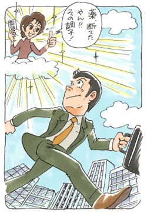

気分障害（うつ病、気分変調症）3
適応不安と悲しみを超えて
（対人恐怖、うつ病）
松谷 優作（仮名）35歳・会社員
私は1970年、大阪市で生まれました。6歳離れた姉と両親との4人家族です。やんちゃな子供だった姉と比べて大人しく手が掛からなかった子供でした。いつも外で友達と遊ぶ姉と、家で親にくっついていた自分は何から何まで対照的でした。
幼少期〜小学校
3才の時、父の転勤でシンガポールに移りました。そこで小学校入学前まで過ごしましたが、これが自分が周りの子供達と「違う」と感じる最初のきっかけでした。その後、父親だけ残り母と姉と3人で帰国してすぐ小学校に入学しましたが、周りは幼稚園からの仲良しや知り合いで私一人よそ者のように感じていました。それでも小学校では仲の良い友達も出来て楽しく過ごしていました。母親は父親がいない分、余計に自分を過保護にしていたように思います。
中学校〜高校
中学に入って新たな「適応不安」が始まりました。幼い頃から親の後ろに隠れて、子供なりの社交性も身に付いてなかったのでしょうか、そのツケが回ってきました。新しい友人の輪に入ることが出来ず、オドオドしがちだった私は不良グループの恰好の標的になりました。毎日のように暴力を受けたり、持ち物を壊されたり隠されたり、お金を巻き上げられたり、昼食を買いにいかされたり、その時に精神的に受けたダメージが契機となり対人恐怖が発症していきました。嫌でたまらなかった中学時代でしたが、それでも登校拒否にもならず卒業まで通い続けました。今考えたら登校拒否なんて大胆なことをする度胸も無かったかも知れません。ただこの人達と絶対顔を会わさない高校に行って穏やかな友人に囲まれた高校生活を送りたい、その一心で受験勉強をしていました。
そして高校では進学校に入学しました。しかし思い描いていた穏やかな高校生活はありませんでした。周りの友人はいい人達になっても、自分自身の対人恐怖や劣等感との苦しみとの闘いの日々でした。中学時代のいじめで同年代の人への対人恐怖、劣等感がひどくなりました。またその不安から発汗、視線、表情、声の震え等が気になりだし、どんどん自己内省を強めていきました。
初めて受けた精神科
周りに怖い人は居なくなったはずなのに今度は自分自身が変になってしまった・・・そんな思いを強くした私は、この頃初めて精神科を受診しました。内容はカウンセリング、自律訓練、投薬でした。そして薬はここから10数年断続的に続いていきました。
観念の世界への逃避
この頃から自分の関心は自己改造、性格改善等に傾き、そのようなことに関する本ばかり読んでいました。反面、高校・大学時代は勉強等は疎かになっていきました。頭の中であれこれやり繰りばかりして、現実に目の前のやるべきことからは逃げていた日々でした。高校・大学では部活をやり、それなりに仲間を作って楽しく過ごしていたのですが、実は薬を飲みながら無理をして明るく振舞って、別れて一人になるとクタクタに疲れていました。そんな偽った自分でしか人と接しられない自分が虚しくなり、楽しく過ごす時もある反面、落ち込みも激しくアップダウンの激しい生活でした。家では家族に自分の精神的な弱さを親のしつけのせいにして責めたり、姉には小さい頃にいじめられた反動から、逆に強がってみたり、子供みたいに我儘で自己中心的な面がありました。
就職
自己内省に明け暮れ、社会人としてのビジョンも持っていなかった私は、対人恐怖を仕事を通して克服したい、そんな動機だけで営業職に就きました。ここでも投薬をしながら何とか仕事をしていましたが上司や特定の顧客への苦手意識が強く、また不安・緊張感から発汗などにもとらわれ、思うように商談が出来なかったり注意力の無さからミスをすることも頻繁にありました。
うつの発症と転職の日々
入社4年目に東京に転勤になりました。ところが行きたいと思っていた東京に移ってうつ病を発症し、結局会社も辞めてしまいました。ここからは仕事が長続きせず、転職・退職の繰り返しが続きました。曲りなりに4年半続けてきた営業職に対する自信も無くなっていき、かといって他の未経験の仕事に踏み出すことも出来ずにいました。何よりうつ病の再発を恐れて無理をするのが怖い生活でした。正社員で失敗して辞めてパート等で社会復帰のリハビリ・・・そういうことを繰り返していました。学生時代から様々な本を読んだり、医者に行ったり、薬を飲んだりして人一倍自己改善に取り組んできたと思っていましたが、その結果がこんな現状でした。
療法との出会い
そんな時に通っていたカウンセラーに森田療法と生活の発見会（神経症の自助グループ）を紹介されました。もうここが最後の頼みだという思いで集談会（生活の発見会の会合）に参加しました。今までこんな悩みを持っているのは自分しかいないと思っていましたが、自分と同じ症状や悩みを持つ多くの方と接していき、徐々に「自分だけじゃないんだ」という気持ちが芽生え、先輩の方の話にも共感出来ました。ただ当初通っていた集談会では症状の言い合い、傷の舐め合い的な面もありました。そんな時に当時の発見会理事のM氏（当財団職員）の話を聞き、自分に負荷を掛け普通の健康人として生きることも大切なんだと思うようになりました。
M氏に勧められて伺った当時の集談会では神経症を理由に生活を後退させることなく、症状はありながらも元気に生活を推し進めている人達ばかりでした。また自分と同じ職業に就かれて頑張っている方もおられ、その人達と接しているだけでも力が湧いていきました。言葉や症状の話で慰めあい、励まし合うのではなく、症状を克服して実生活で頑張っている姿に励まされ、勇気付けられる・・・自分も早くこの人達みたいになりたい、目標にしたい、そう思いながら集談会に通うようになりました。
彼女の死

徐々に生活が好転していった矢先、私にとって一生忘れることの出来ない辛い、悲しい出来事が起こりました。3年間交際していた彼女が急性白血病にかかり、亡くなってしまったのです。意識が無くなる直前に「今、電話いけるかな」という短いメールの後、僕の携帯に電話を掛けてくれていました。しかし僕は一瞬携帯の傍を離れていてその電話に出れませんでした。着信に気付いて電話した時にはもう話すことは出来ませんでした。病室で亡くなった彼女と最後の対面をした時、お礼とそのことのお詫びを何度も言いました。でもそのことの後悔はずっと残っています。
それから一年が経ちましたが今も元気だった頃の彼女とあの最後の一週間のことは毎日思い出します。その度に悲しくなり、後悔の気持ちで胸がさける（裂ける）ようになります。ただ少しずつその苦しみを背負う覚悟が出来てきているようにも思います。神経症も当初は症状のことばかりに関心がいっていたのが今では徐々に実生活に目を向けられるようになりました。高校以来20年近く服用していた薬も皆さんの励ましを受けながら断つことが出来ました。今では半分趣味でやっていますが集談会でスポーツのイベントを開催したり、今年は曲りなりにも集談会の世話役もさせていただき、少しずつですが人の為に行動しようという気持ちも芽生えてきたように思います。自分が病気ではなく健康であることに少しずつ気付いていきました。学生時代からずっと続けていた間違った方向への努力を改めて、森田療法を学びながら生活を推し進めることで少しずつではありますが、自覚と気付きを実感出来るようになったことを今は感謝しています。